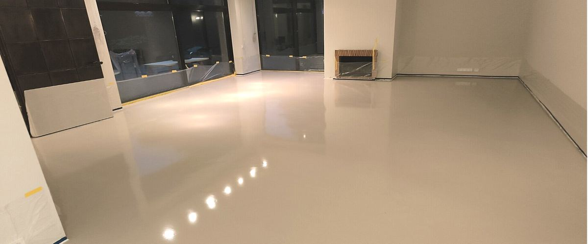
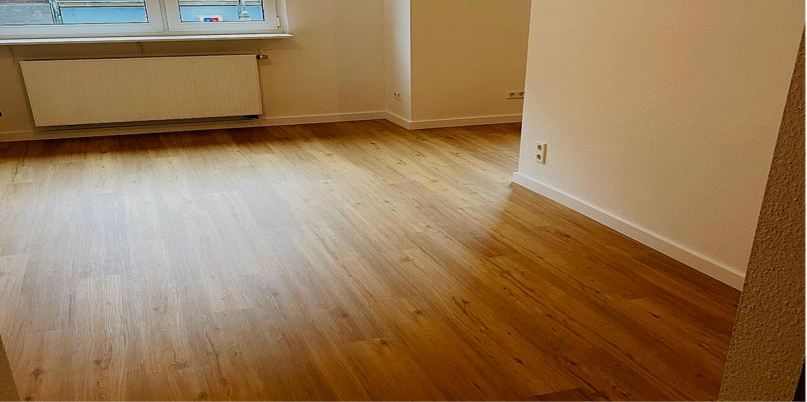
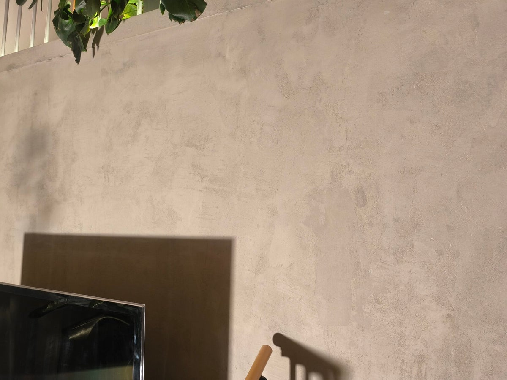

Leistungen
Vier Gewerke. Ein Anspruch.
Vom Untergrund bis zur fertigen Oberfläche — jedes Projekt wird sauber geplant, mit Premium-Materialien ausgeführt und präzise abgeschlossen.

Fugenloser PU-Boden
Fugenlose Beschichtungen für Wohn- und Objektbereiche — modern, elastisch und langlebig.
Mehr zu PU-Böden →
Trockenbau
Raumkonzepte, wandbündige Schiebetüren, Vorsatzschalen und Akustiklösungen auf höchstem Niveau.
Mehr zu Trockenbau →
Bodenverlegung
Vinyl, Parkett & Designböden — inklusive Untergrundvorbereitung, Beschaffung und Musterservice.
Mehr zu Bodenverlegung →
Designwand
Spachteltechnik & Betonoptik — fugenlose Wandflächen als Unikat für stilbewusste Räume.
Mehr zu Designwänden →